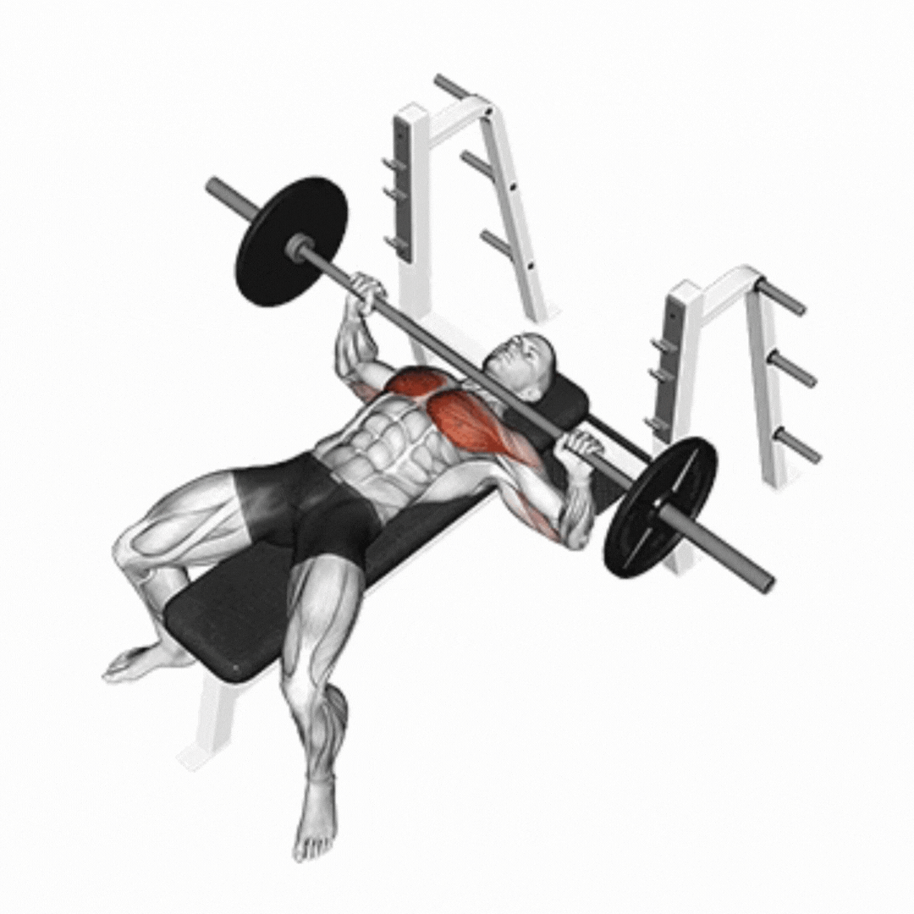

Supino Reto com Barra
Categoria: Peitoral | Recorde Atual: 100 kg

Histórico de Cargas & Progressão
| Data | Carga (kg) | Reps | RPE | Evolução |
|---|---|---|---|---|
| 04/10/2026 | 100.0 kg | 8 | RPE 8.5 | 🟢 +2.5 kg |
| 27/09/2026 | 97.5 kg | 8 | RPE 8.0 | 🟢 +2.5 kg |
| 20/09/2026 | 95.0 kg | 8 | RPE 8.0 | ⚪ Mantido |